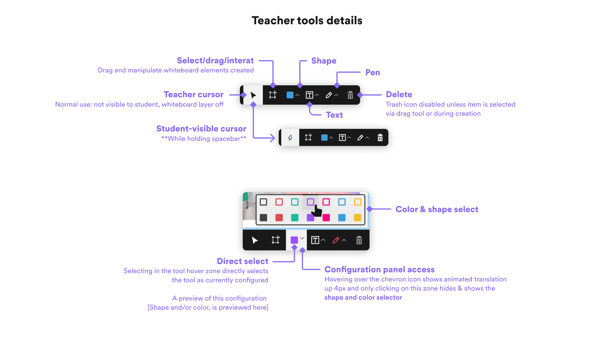
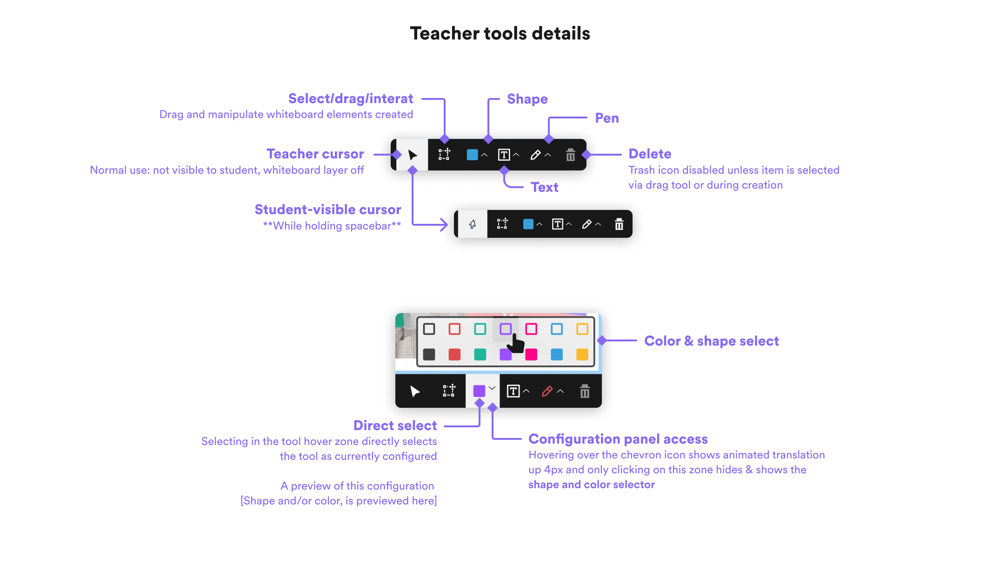

TLDR;
REMOVE TECH BARRIERS, IMPROVE STUDENT EXPERIENCE.
The old system of importing files, folders and dependencies all onto a machine powerful enough that many of our freelance teachers didn't have access to proved to be a barrier to not only their experience, but impacted the experience for their students as well.
Imagine managing all these things while teaching an immersive classroom presentation.. From interviews conducted, we knew teacher excitement with this newer, immersive class delivery environment equally stretched and stressed them out as much as it excited and empowered them.
Working with Tech leads and POs, we carved out priority for putting all this into a clear, lightweight interface all contained in the web browser. Freeing up cognitive load and increasing the reach to the full population of teachers under our employ.
THE OBS PROBLEM
Requiring and a complicated import and file management flow placed a burden on teachers and on our teacher operations staff to create documentation and maintain assets from a central repository to import into the right directories in teachers' computers.
Using OBS required teachers to filter their own required functionality from a vast array of irrelevant user interface, and from observational studies we conducted as well as survey data collected, we found this to be highly detrimental to their main objective: to deliver quality immersive classroom experiences via our Hyperclass tool.
HOW ABOUT NO-BS?
INITIAL WIREFRAMES
By getting this all into a web browser, we aimed to smooth the experience for eachers, and letting them focus on teaching and classroom management, content delivery and presentation quality in the form of green screen settings, camera framing and scene direction.


 

DESIGN
SYSTEM
By getting this all into a web browser, we aimed to smooth the experience for eachers, and letting them focus on teaching and classroom management, content delivery and presentation quality in the form of green screen settings, camera framing and scene direction.
EXECUTION
UI & TESTING
By getting this all into a web browser, we aimed to smooth the experience for eachers, and letting them focus on teaching and classroom management, content delivery and presentation quality in the form of green screen settings, camera framing and scene direction.
OUTCOME & IMPACT;
TEACHERS HAVING TO DEAL WITH FAR LESS FAFF ALLOWS THEM TO FOCUS ON TEACHING.
Upon its release, the Teach Online team reported teacher survey feedback and deemed it a success, not only in the way of readily apparent UI improvements from OBS relevant to a teacher's core job to be done, but in all the stuff invisible and not readily apparent needing to be handled and managed just to get the software to function and remain that way.
Not only that, student satisfaction scores sorted for the Hyperclass lesson type also improved a bit